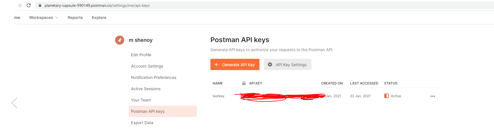

Postman - Generating API keys and making Postman API calls 28th Jan 2021
In this blog we will learn how to use various Postman API's, generate Postman API key inorder to call Postman endpoints and how to retrieve all collections and their details associated with your postman id.
Generating API key
-
Step 1) Get an API key - First go to official Postman
website to generate a API key. Click on below link
Postman Api key generation link
Clicking on the link will prompt you to login. Once succesfully logged in you can generate the key. After generating the key you should see something like below. Ensure that you save the API key somewhere safe because you can't get the full key again.Even after you login to Postman,your API key would have been masked,for security reasons. You can only view an unmasked API key immediately after generating it.So remember to keep your API key safe  -
Step 2). Get all collections in the given workspace.Call
endpoint https://api.getpostman.com/collections and donot
forget to send api-key (the one you generated above) in the
header
 If you notice the response, you will see a bunch of
collections,all assoicated with your postman id. In this case
look for "librarymockserver" and grab the uid.This uid you will
need for your next request
If you notice the response, you will see a bunch of
collections,all assoicated with your postman id. In this case
look for "librarymockserver" and grab the uid.This uid you will
need for your next request
-
Step 3). Get details of a particular collection i.e
"librarymockserver" in this case. If you are wondering where did
"librarymockserver" come from then please refer my blog
Postman basic setup.
We already grabbed the uid of that collection in above step, so now we need to call https://api.getpostman.com/collections/{{collection_uid}}. Replace {{collection_uid}} with the value of uid we captured in step 2. Donnot forget to send the x-api-key in the header if you notice the response, you will see a detailed information
about the collection inclduing the egamples you have configured.
As we know we did configure 2 examples for our books endpoint
i.e books_200 and books_500.Search with the egample
name(books_200) in the result set and you should see id
associated with it.Keep id and name handy.
if you notice the response, you will see a detailed information
about the collection inclduing the egamples you have configured.
As we know we did configure 2 examples for our books endpoint
i.e books_200 and books_500.Search with the egample
name(books_200) in the result set and you should see id
associated with it.Keep id and name handy.
To see how to use x-mock-response-id and x-mock-response-name refer my blog Postman basic setup. In that blog look for heading "How to use x-mock-response-name or x-mock-response-id"
Official Documentation
For full documentation on generatin API keys refer Postman Documenation below Official Postman website
And that's it. Hope you undertood how to customize JSON server. .Email me at "techspacedeck@gmail.com" incase you have queries. Alternatively, you can fill the "CONTACT" form or drop a comment below